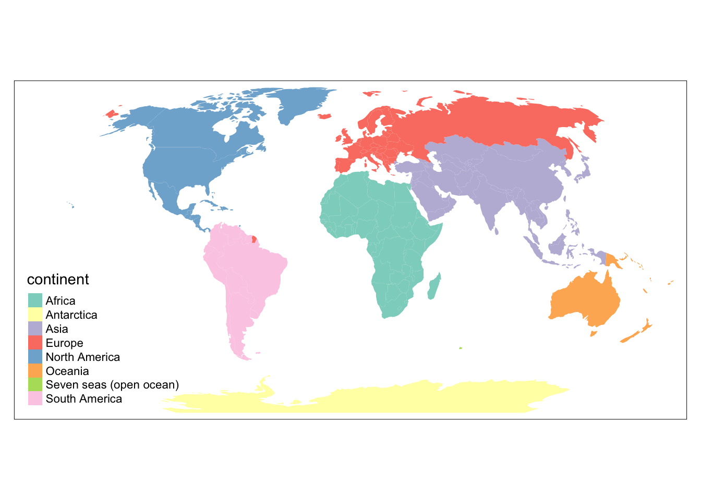
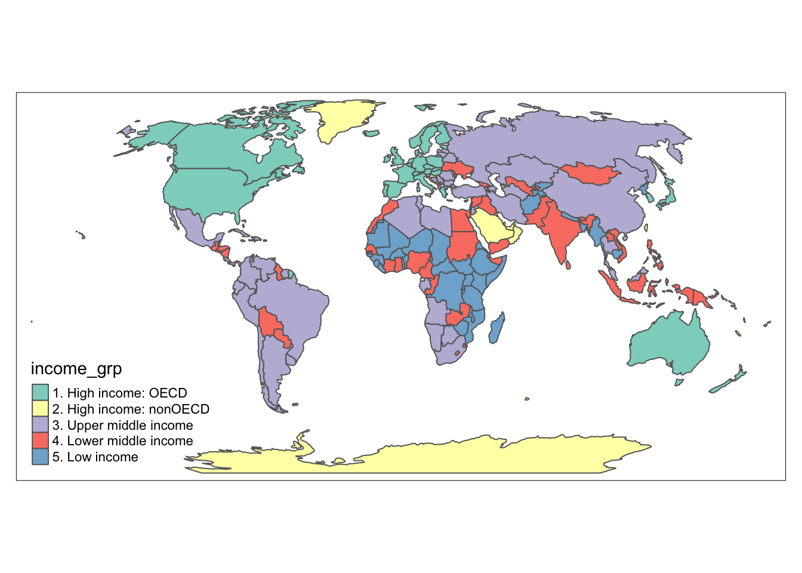
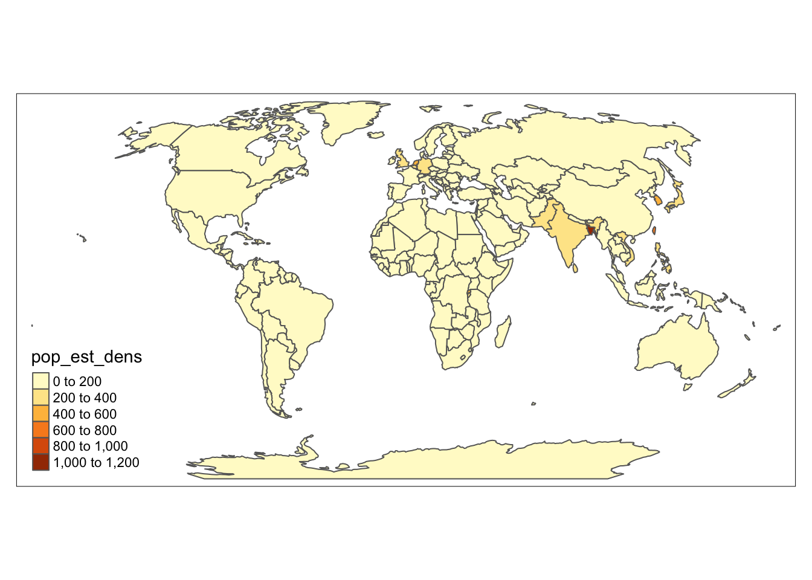

# Load the tmap library and World data
library(tmap)
data("World")
# Transform World data to a Robinson projection https://epsg.io/53030
World <- sf::st_transform(World, "ESRI:53030")Notes: OSullivan and Unwin 2002
What is spatial analysis?
Spatial analysis broadly refers to four areas of practice: (pp. 2-3)
Data manipulation: Can you collect, read, write, visualize, and transform the data?
-
Data analysis: Can you describe the data? Can you find any big patterns in the data?
Descriptive
Exploratory
Statistical analysis: Can the data be represented by a statistical model?
Spatial modeling: Can we predict outcomes based on statistical models of spatial data?
This class is focused on the first two areas. Historically, it has been difficult to do more than the first two areas of work in a GIS application
What is spatial data?
-
entity-attribute model
-
geometry
- points, lines, areas
-
associated fields
- nominal, ordinal, interval, or ratio data
-
What is an entity?
For most purposes, an entity is… (p. 8)
Identifiable: can you observe or perceieve the entity?
Relevant: do you have a reason to observe it?
Describable: can you define and describe the attribute or characteristics of the entity?
Formally, an entity is defined as a phenomenon of interest in reality that is not further subdivided into phenomena of the same kind
How are geographical phenomena represented in GIS?
Sections 1.2 and 1.3
What are spatial transformations?
Buffering
-
Spatial joins or indexing
- Point in polygon
How can we change how spatial data is represented?
Why is representation of spatial data complicated?
-
multiple representations
different scales,
time
-
objects
with uncertain boundaries,
that are fuzzy
may be fractal
What is a pattern?
What is a process?
What types of spatial data?
What is vector data?
Object view (pp 6-7)
-
World is made of entities in space
- Entities are real but often subjective
-
Objects
digital representation of an entity
come in different types, e.g. points, lines, areas
can be associated with behavior or characteristics—static or dynamic attributes
What is raster data?
Field view (p. 7)
World is made up of properties varying across space
Can be described with a grid of fields with values (e.g. 1 = ‘house’; 0 = ‘no house’); sets of values together define a field
Raster data
- digital elevation matrix (DEM)
equivalent to a triangulated irregular network (TIN) — representation of a field using a vector model
When should you use vector (object) and when should you use raster?
You should now be able to see that the key question, from the present perspective, is not which picture of reality is correct but which we choose to adopt for the task at hand.
…
A common approach—reinvented any times—is based on the spatial dimensionality of the object concerned. Think about how many types of object you can draw.
The U. S. National Standard for Digital Cartographic Databases (DCDSTF, 1988) and Worboy’s generic model for planar spatial objects (Worboys, 1992, 1995) both define a comprehensive typology of spatial objects in terms similar to these.
An Exercise: Objects and Fields Decoded (p. 9)
Obtain a topographic map at a scale of 1:50,000 or larger of your home area. Study the map, and for at least 10 of the types of entity the map represents—remember that the map is already a representation—list whether they would best be coded as an object or a field. If the entity is to be represented as an object, state whether it is a point, line, or area.
If you were asked to produce an initial specification for a data model that would enable a mapping agency to ‘’play back’’ this map from a digital version held in a database, how many specific instances of objects (of all kinds) and fields would you need to record?
Hint: Use the map key. There is, of course, no single correct answer to this question.
Note
Multidimensional data
This class is primarily focused on objects with XY dimensions—not XYZ.
Note
Data with spatial and temporal attributes
See stars package
Objects are complex (p. 11)
Example of how ArcGIS organizes data
- location
- features (made up of locations)
- surfaces (aka fields)
- images
- networks
Objects depend on the scale of analysis aka the Multiple representation
Multiple representation problem: (p. 11-12) > “consequence is to make it impera tive that in designing a geographic information database and populating it with objects of interest, it is vital that the type of representation chosen will allow the intended analyses to be carried out.”
“some entities are fractals, having the same or similar level of detail no matter how closely we zoom in.” (p. 13) > Fractals are difficult to represent digitally unless we accept that the representation is only a snapshot at a particular resolution. The classic example is a linear feature such as a coastline whose ‘’crinkliness’’ remains the same no matter how closely we examine it.
Certainty and uncertainty
Attributes use different levels of measurement, scales, and units
Formally, an attribute is any characteristic of an entity selected for representation. In this section, we explore a simple way of classifying attributes into types based on their level of measurement. The level of measurement is often a constraint on the choice of method of analysis and, ultimately, on the inferences that can be drawn from a study of that attribute’s spatial structure. (p. 18)
When information is collected, measurement is the process of assigning a class or value to an observed phenomenon according to some set rules. (p. 18) … If this everyday process is to yield useful measurements, it is necessary to insist that measurements are made using a definable process, giving reproducible outcomes that are as valid as possible. (p. 19) … In short, we need to know what we are measuring, there must be a predefined scale on which we can place phenomena, and we must use a consistent set of rules to control this placement.
Level of measurement … “rules defining the assignment of a name, rank, or number to phenomena” — “different levels being associated with different rules” Stevens (1946) classification four levels:
- nominal, (categorical)
- ordinal, (categorical)
- interval, (numerical)
- and ratio (numerical)
nominal - inclusive and mutually exclusive - can be counted for frequency distributions - can be located for operations on coordinates (e.g. area, distance)
ordinal - possible to rank in order - each category is different but the scale of difference is unknown - “some statistical manipulations that do not assume regular differences are possible”
interval - “differences or distances between categories are defined using fixed equal units”
| Category | Level | Definition | Can do | Can’t do | Atomic type |
|---|---|---|---|---|---|
| Categorical | nominal | character | |||
| Categorical | ordinal | factor | |||
| Numeric | interval | numeric (double, integer) | |||
| Numeric | ratio | numeric (double) | |||
| log interval | interval between measures rises according to a power rule |
||||
| vector | cyclical scales |
qtm(
shp = World,
fill = "continent",
borders = NULL,
projection = "ESRI:53030"
)
# ordinal measure converted from ratio
qtm(
World,
fill = "income_grp"
)
# ratio measure with dimensions
qtm(
World,
fill = "pop_est_dens"
)
Spatial transformations
single feature operations
- buffer
- centroid
usa_buffer <- sf::st_buffer(World[169,], units::as_units(100, "mi"))
usa_centroid <- sf::st_centroid(World[169,])Warning in st_centroid.sf(World[169, ]): st_centroid assumes attributes are
constant over geometries of xtm_shape(World,
bbox = usa,
projection = "ESRI:102008") +
tm_borders() +
tm_shape(usa) +
tm_fill("red", 0.25) +
tm_shape(usa_centroid) +
tm_symbols()Error in as.list.environment(environment()): object 'usa' not foundoverlay or multifeature operations
- geometric intersection of the polygon areas in each map.
rast_balt <- terra::rast("/Users/elipousson/Downloads/MD_Baltimore_19371_rectified/MD_Baltimore_19371.tif")Warning: /Users/elipousson/Downloads/MD_Baltimore_19371_rectified/
MD_Baltimore_19371.tif: No such file or directory (GDAL error 4)Error: [rast] cannot open file: /Users/elipousson/Downloads/MD_Baltimore_19371_rectified/MD_Baltimore_19371.tiftm_shape(rast_balt) +
tm_rgb() +
tm_shape(mapbaltimore::baltimore_city) +
tm_borders()Error in as.list.environment(environment()): object 'rast_balt' not found